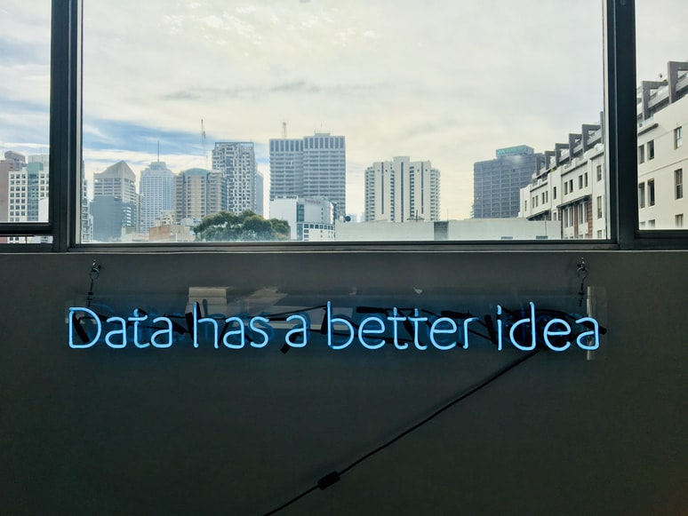

YUN-HOME
PORTFOLIO
BLOG
CONTACT
YUN-HOME
P
B
C
Web developer
Data Engineer
I&E Logistics
About myself
Web developer
Project
---
Coding languages (HTML and CSS)
Visual design
JavaScript, Ajax and web animation techniques
Java, PHP and Ruby
Photoshop and Illustrator and Sketch
Still learning
Data Engineer

Project
---
Technical skills (SQL Basic and analysis with python)
Fundamentals of statistics
Data Format and Preparation
Data Analysis and Exploration
Problem-Solving
Creating Reports
Import and Export Logistics
Skills
---
Import and Export Document Preparation
Dangerous Goods Transport by IATA
Import and Export air freight proceduers by IATA
Experienced logistics and warehouse management
About myself
Yun Li
---
Made in China
Spend 12 years in Melbourne
Studied in La Trobe Uni for diploma of IT
6 years work experience in logistic field
Looking for new challenge
Interested in Website, data and coding